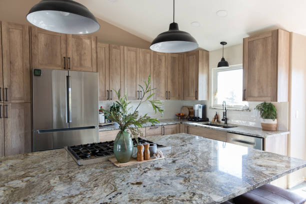
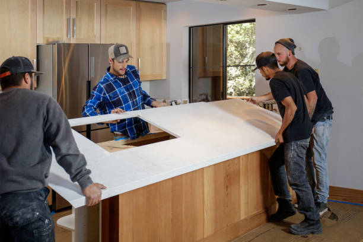
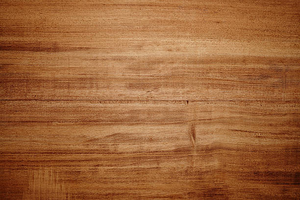
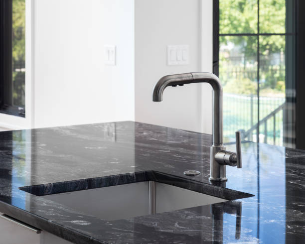
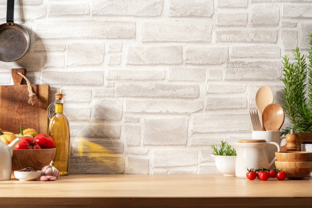
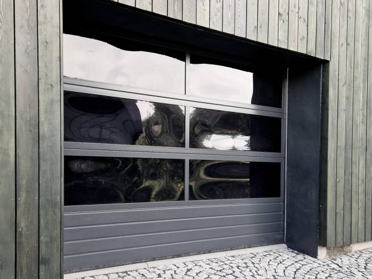
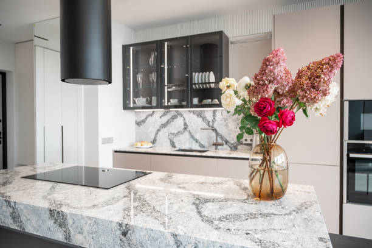
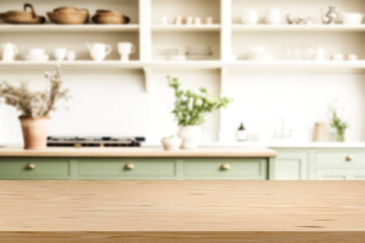
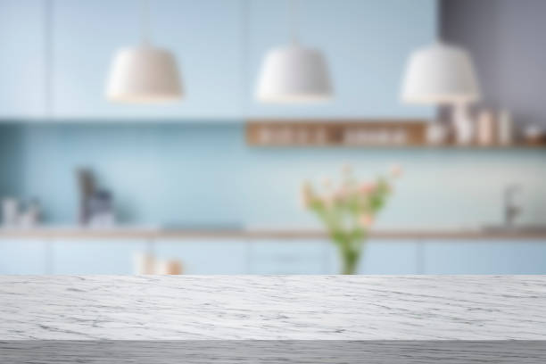

USA - Nationwide
info@ohmykitchen.pro
USA - Nationwide
info@ohmykitchen.pro

Achieve a contemporary look with our concrete countertop installation . Durable and customizable, these countertops are perfect for unique designs that stand out!
Embrace industrial elegance with custom concrete countertops. Our professionals craft unique designs that elevate your space in Usa - Nationwide. Contact us today!
Residential & commercial Countertops
Quality services at affordable prices
Immediate 24/ 7 emergency services


When it comes to enhancing the beauty and functionality of your kitchen or bathroom, granite countertops stand out as one of the best options available. Our granite countertop installation service emphasizes quality craftsmanship, durability, and aesthetic appeal. We pride ourselves on providing personalized solutions that cater to the unique preferences of our clients. Granite is a natural stone known for its resistance to heat, scratches, and stains. It offers a range of colors and patterns, making it easy to find the perfect match for your home or business.
Why choose us? Our team is comprised of experienced professionals who have a deep understanding of granite and stone installation techniques. We utilize the latest technology and tools to ensure a precise fit and flawless finish. Our commitment to customer satisfaction means that we take the time to understand your vision and execute it perfectly. Trust us for your granite countertop installation in Usa - Nationwide, and transform your space with elegance and style.
If you're looking for a countertop solution that combines beauty with low maintenance, look no further than quartz countertops. Our quartz countertop installation service offers a stunning variety of designs, colors, and finishes that can complement any style of home or commercial space. Quartz is non-porous, making it resistant to stains and bacteria, which is essential in keeping your countertops looking pristine and safe for food preparation.
What sets us apart? We offer not just installation but a comprehensive consultation to help you select the best quartz countertops that fit your needs and budget. Our skilled installers ensure that every piece is carefully measured and installed to perfection. With a focus on quality and precision, we guarantee that your quartz countertops will be a lasting investment in your home or business. Experience the benefits of quartz countertops in Usa - Nationwide for a space that looks great and functions even better.

For those who desire a touch of luxury, marble countertops are the ultimate choice. Renowned for their beauty and sophistication, marble surfaces can elevate any kitchen or bathroom design. Our marble countertop installation services cater to those who appreciate the finer things in life. Each marble slab is unique, providing a one-of-a-kind aesthetic that can’t be replicated.
Why partner with us for your marble countertop project? Our skilled craftsmen understand the intricacies involved in marble installation. We utilize advanced techniques to ensure your countertops are not only beautiful but also durable. We’re dedicated to providing exceptional service, with consultations that help you choose the right type of marble suited for your needs. With our guidance, your home will exude elegance and style—let us help you create unforgettable spaces with our exquisite marble countertops!

For those seeking a warm, inviting kitchen atmosphere, butcher block countertops are an ideal choice. Made from hardwood strips bonded together, butcher block provides a durable and stylish surface perfect for food preparation and casual dining. Our butcher block countertop installation services in Usa - Nationwide offer a wide range of options, from traditional to modern styles that cater to your personal taste.
Our team specializes in seamless installations, ensuring that your butcher block is cut, fitted, and finished to perfection. We prioritize quality, using sustainably sourced woods that not only enhance your kitchen aesthetic but also offer longevity and resilience against wear and tear.
Choosing us means you are working with experts who are passionate about their craft. We believe in delivering exceptional results that truly reflect the character of our clients. Additionally, we provide guidance on maintenance and care, ensuring your butcher block countertops remain beautiful for years to come.

If affordability and versatility are your main considerations, laminate countertops provide an effective solution that doesn’t compromise on style. Laminate is available in a vast array of colors and patterns, making it perfect for various decor styles. Our laminate countertop installation services ensure you receive a high-quality product tailored to your specific needs.
Our installation process is designed to be efficient without sacrificing craftsmanship. We utilize superior quality laminates that are scratch and water-resistant, ensuring longevity. Our skilled professionals will guide you through selecting the right laminate that matches your vision and elevates your space.
You should choose us for your laminate countertop installation because we pride ourselves on delivering exceptional value. Our commitment to customer satisfaction means that we are always ready to address your concerns and make recommendations based on best practices. We strive to ensure that your new countertops enhance your home and provide years of reliable service.

Discover the seamless beauty of solid surface countertops with our expert installation services in Usa - Nationwide. Solid surface materials like Corian and LG Hi-Macs are designed to provide a modern, cohesive look in any kitchen or bathroom. Their non-porous nature makes them easy to clean and maintain, while also offering endless customization options.
Our team specializes in solid surface countertop installation, guaranteeing a perfect fit and impeccable craftsmanship. The flexibility of solid surface materials means we can create custom shapes and sizes to suit your needs, including integrated sinks and backsplashes that enhance the overall design.
We pride ourselves on our customer-centered approach, guiding you through the selection process to find the ideal style and color that complements your home. Not only do our solid surface countertops offer exceptional design possibilities, but they’re also durable and built to last. With proper care, they’ll maintain their beauty for years, making them a smart investment for your home.

Embracing sustainable design is increasingly important in today’s world, and recycled glass countertops offer an eco-friendly solution that doesn't compromise on style. These countertops are made from post-consumer glass tempered with resin, resulting in a durable, chic surface for kitchens and bathrooms alike. Our recycled glass countertop installation services help homeowners create beautiful, sustainable spaces.
Our team is passionate about providing environmentally conscious options while ensuring quality and artistry. Recycled glass countertops are available in numerous colors and patterns, allowing you to bring a splash of chic elegance to your space.
Choosing us means you are partnering with professionals who share your commitment to sustainability. We emphasize the use of eco-friendly materials and practices throughout the installation. Our experienced team is not only knowledgeable about installation but also about the benefits of this innovative material, helping you make an informed decision for your home.

Every space is unique; therefore, your countertops should be too. Our custom countertop design and fabrication service allows you to create a one-of-a-kind surface that perfectly fits your style and requirements. Whether you desire a bold statement piece or a subdued complement to your decor, we offer a vast selection of materials, colors, and styles that can be tailored to your specifications.
By choosing our custom services, you benefit from our in-depth consultation process where our designers work closely with you to capture your vision, taste, and functional needs. We are experts in fabrication techniques, ensuring that your custom countertop not only looks amazing but also performs well in your daily activities. Our focus is on excellence, precision, and creativity. Let us make your ideal countertops a reality with our superior custom design and fabrication services in Usa - Nationwide.

If your current countertops are outdated or damaged, it may be time for a replacement. Our countertop replacement services provide a streamlined approach to upgrading your space. We ensure minimal disruption while delivering high-quality installations that breathe new life into your kitchen or bathroom.
Our team works efficiently and carefully to remove your old countertops, taking care to preserve the integrity of your cabinets and other installations. From there, we guide you through selecting the perfect material, style, and color that aligns with your vision.
Why choose us for your countertop replacement needs? We understand that replacing countertops is a significant investment, and our goal is to ensure that the process is as hassle-free as possible. Our vast experience and commitment to quality allow us to deliver results that enhance your home’s value while providing functional and stylish surfaces.

Elevate your outdoor living space with our outdoor kitchen countertop installation service . The right countertops can transform your outdoor kitchen into a functional and attractive area perfect for entertaining and cooking. We offer a range of durable materials designed to withstand the elements and enhance your outdoor experience.
What makes us the best choice? Our focus on quality and functionality means we offer informed recommendations tailored to outdoor environments. We consider factors such as durability, weather resistance, and maintenance when selecting the right materials for your outdoor countertops. Our team of skilled professionals will ensure your outdoor kitchen countertops are installed with precision, adding beauty and functionality to your patio or garden. Choose us for outdoor kitchen countertop installation in Usa - Nationwide, and enjoy a stunning outdoor paradise.

The kitchen island is the heart of any modern kitchen, and it deserves the best countertops. Our kitchen island countertop installation service in Usa - Nationwide focuses on providing aesthetically pleasing, durable, and functional surfaces. From preparing meals to casual dining, we understand that kitchen islands serve multiple purposes, and so should your countertops.
Our experience and knowledge allow us to help you select the right material that not only complements your kitchen's design but also meets your daily functional requirements. We pride ourselves on our craftsmanship, ensuring that each countertop is installed with care and precision. Our team collaborates with you to create a kitchen island that becomes the focal point of your culinary space. Transform your kitchen with our premium kitchen island countertop installation services in Usa - Nationwide.

Transform your bathroom into a luxurious retreat with our stylish bathroom countertop installation services in Usa - Nationwide. We offer a range of materials to enhance the elegance and functionality of your bathroom space.
Why are we the best option for your bathroom countertops? Our expert team understands the unique challenges of bathroom renovations, from moisture resistance to durability. We help you choose the best material, whether it’s elegant marble, functional quartz, or beautiful solid surface, to meet your specific needs. We are committed to excellent craftsmanship and customer service, ensuring a hassle-free installation process. Elevate your bathroom’s style and utility with our premium countertop options!

When it comes to countertops, the edge design can significantly impact the overall look and feel of your space. Our countertop edge design and customization services provide clients with the opportunity to personalize their surfaces, creating unique features that stand out.
Whether you prefer a traditional beveled edge, a modern square edge, or an ornate profile, our experienced team can help you choose the perfect style that complements your decor. We take pride in our attention to detail, ensuring that every edge is crafted to perfection.
Choosing us for your edge design customization means opting for professionals who understand the nuances of styles and materials. Our commitment to high-quality craftsmanship and customer service ensures that you receive a product that not only meets your needs but also inspires and enhances your space.
If your existing countertops are showing wear and tear but the base is still functional, countertop resurfacing might be the perfect solution. Our countertop resurfacing services transform your surfaces, extending their lifespan and improving their appearance without the need for a full replacement.
We utilize specialized techniques and high-quality materials to rejuvenate your countertops, providing a fresh look that can make a significant difference in any room. Our team assesses your existing surfaces and recommends the best resurfacing options to achieve your desired aesthetic.
Choosing us for your countertop resurfacing ensures that you receive a solution that saves you time and money. We pride ourselves on our commitment to quality and customer satisfaction, ensuring that the resurfaced countertops meet your expectations and enhance your home's value.

Damage to countertops can be an eyesore and affect the functionality of your home. Our countertop repair and restoration services are here to handle everything from minor scratches to significant damage, ensuring your surfaces look great again.
Why are we the best choice for your repair needs? Our skilled technicians understand how to assess the type of damage and apply the best methods for restoration. We work with various materials, including granite, quartz, and laminate, ensuring a careful and effective repair process. Our commitment to excellence means that we’ll restore your countertops efficiently and professionally while providing advice on future care. Don’t let damage detract from your home’s beauty—let us restore your countertops to their former glory!

Protecting your stone countertops is essential to maintaining their beauty and longevity. Our sealing and maintenance service ensures your stone surfaces—whether granite, marble, or quartz—are shielded against stains, spills, and everyday wear. We use high-quality sealants that penetrate deep into the stone, providing long-lasting protection while enhancing its natural beauty.
Why partner with us? Our experts are thorough in their evaluation of your countertops, and we provide professional sealing that allows you to enjoy your surfaces worry-free. Additionally, we offer ongoing maintenance plans to ensure your countertops remain in pristine condition over their lifespan. Count on us for sealing and maintenance that will keep your stone countertops beautiful and functional for years to come .

Elevate your home bar experience with stylish and functional countertops designed for entertaining. Our countertop installation service for home bars focuses on aesthetics and practicality, ensuring your bar is a space where you can host and enjoy gatherings comfortably. From sleek quartz to warm butcher block, we offer materials that complement your home decor while being durable enough for everyday use.
Choosing us means you get a dedicated team that appreciates how important your home bar is to your entertainment space. We help you select the right materials and design options that meet both your style and functionality needs. Our experienced installers ensure that every detail is perfect, resulting in a stunning home bar countertop. Impress your guests and enhance your hosting capabilities with our expert installation services for home bars .

As sustainability becomes a priority for homeowners, eco-friendly countertop solutions are in high demand. Our eco-friendly countertop options include materials that are sustainable, recycled, or rapidly renewable, ensuring you make a positive impact on the environment while enhancing your home.
We offer a range of options, from recycled glass to bamboo and reclaimed wood, allowing you to choose a countertop that mirrors your commitment to sustainability. Our team is knowledgeable about the various eco-friendly materials available and can help you select the perfect solution that meets your design preferences.
Why choose us? Our focus on sustainable practices and environmentally responsible products sets us apart in the Usa - Nationwide area. With a commitment to quality and customer satisfaction, we provide beautiful, eco-friendly countertops that align with your values and aesthetic goals.

Experience the pinnacle of luxury with our high-end countertop installation services for discerning homeowners . When only the best will do, our selection of premium materials will elevate your kitchen or bathroom to unparalleled heights.
What makes us the best choice for luxury installations? We specialize in exotic stones, high-quality quartz, and bespoke materials, ensuring you have access to the finest selections available. Our expert craftsmen handle every step of the installation process with precision and detail, creating stunning surfaces that are both practical and luxurious. With our focus on exceptional customer service, we guide you throughout the entire project, ensuring satisfaction at every stage. Create a lavish space that reflects your personal style with our luxury countertop solutions!

In commercial kitchens, durability and functionality are paramount. We provide high-quality countertop installation services tailored to commercial environments in Usa - Nationwide, ensuring that your kitchen meets both aesthetic and practical needs.
Why choose our services for your commercial kitchen? We understand the unique requirements of commercial spaces, offering durable materials that withstand wear and tear. Our team is experienced in working with various businesses, from restaurants to catering facilities, ensuring compliance with health and safety regulations. We’ll work with your schedule to minimize downtime, delivering superior service without disruption to your operations. Trust us to equip your commercial kitchen with countertops designed for peak performance and longevity!

The countertops in your retail space can significantly influence customer perception and enhance the shopping experience. Our retail store countertop installation services focus on creating beautiful, functional, and inviting displays.
What sets us apart for retail solutions? We offer a diverse selection of materials and designs tailored to your business's branding and style. Our experienced team understands the importance of presenting products attractively while providing durable surfaces suitable for heavy daily use. We collaborate closely with you to ensure your new countertops enhance your store's aesthetics and functionality. Let us help you create a welcoming environment that encourages customer engagement!

In the hospitality industry, the right countertops can significantly impact guest experience. Our hotel and restaurant countertop solutions focus on providing top-quality installations that combine aesthetics with functionality. We understand the need for durable and attractive surfaces in high-traffic settings, ensuring they meet both design and practical needs.
What sets us apart? We take pride in our ability to customize solutions based on your specific needs, whether you require elegant stone surfaces for a fine dining restaurant or robust laminate for casual settings. Our team of professionals has the experience to deliver outstanding results that enhance your establishment’s ambiance. Transform your hospitality space with our hotel and restaurant countertop solutions .

Create a productive and stylish workspace with our office countertop installation service . We specialize in providing a variety of countertop solutions that cater to the unique needs of offices, from reception areas to workstations. Our countertops are designed to enhance functionality while creating a professional atmosphere.
Why choose us? Our team understands that the office environment should be a blend of beauty, comfort, and practicality. We offer materials that suit all styles, ensuring your office space reflects your company culture while supporting daily operations. Our expert installation guarantees workspaces that function seamlessly while providing aesthetic appeal. Upgrade your workplace with our professional office countertop installation services .

In demanding environments like medical facilities and laboratories, hygiene and durability are key components to consider for countertops. Our specialized countertop services for medical and laboratory settings cater to those critical needs.
Why choose our services? We understand the stringent requirements of medical and lab environments, offering materials that are easy to clean, resistant to chemicals, and built to last. Our experienced team ensures proper installation, meeting all health and safety regulations. We work closely with facility managers to provide customized solutions tailored to their unique space. Trust us to deliver countertops that are safe, efficient, and suitable for even the most sensitive environments!
USA - Nationwide Countertops Pros
(877) 848-1711
info@ohmykitchen.pro
09.00 AM - 09.00 PM
09.00 AM - 12.00 PM